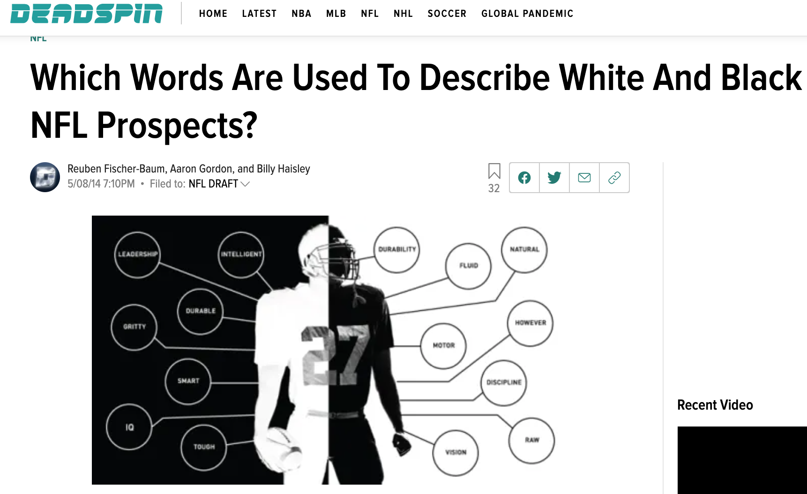
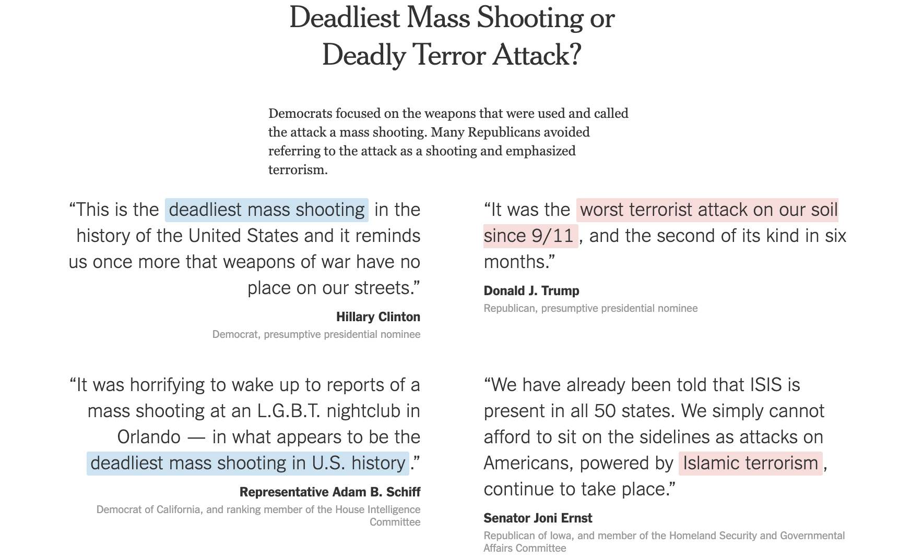
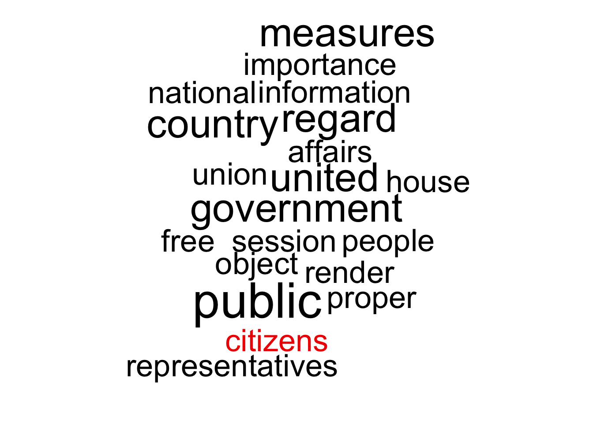
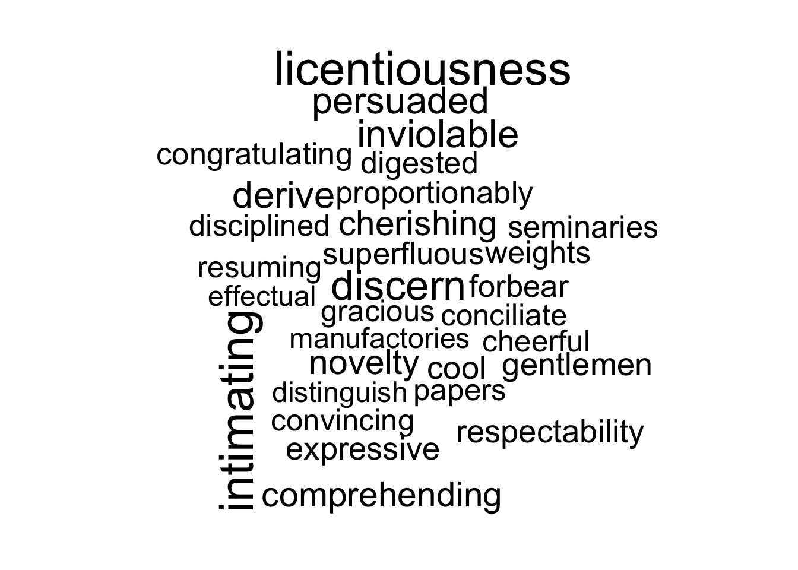
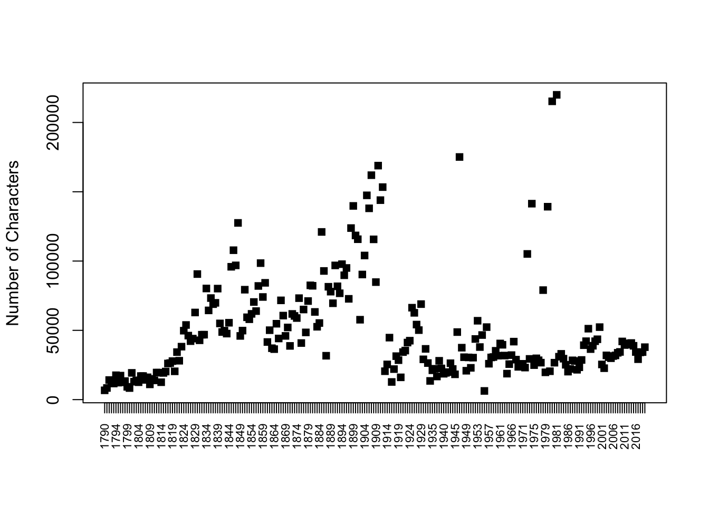
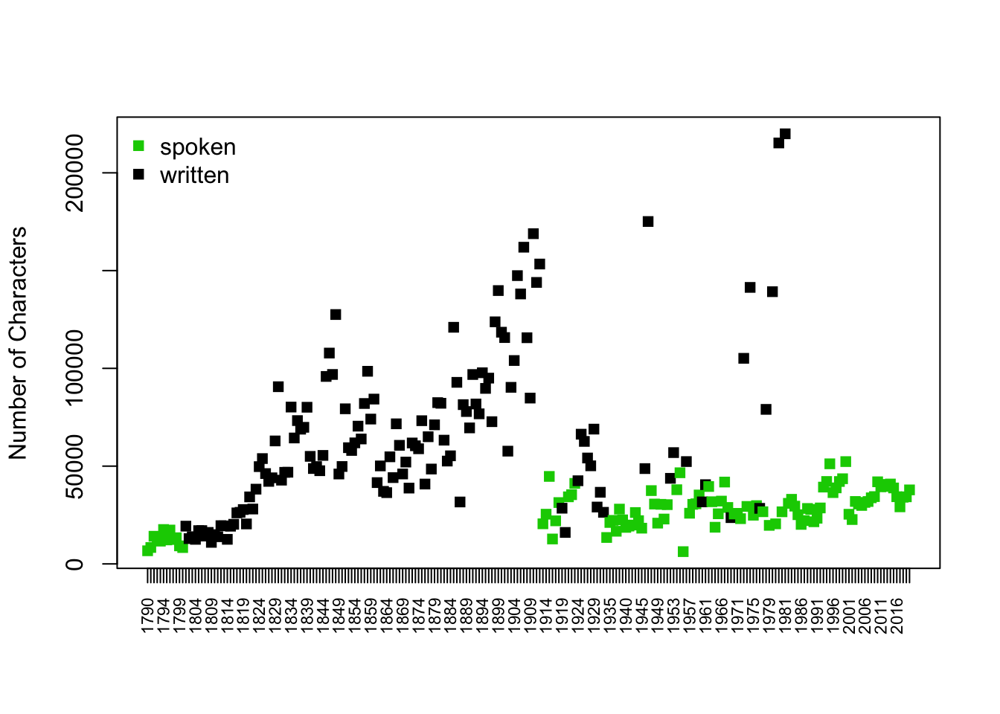
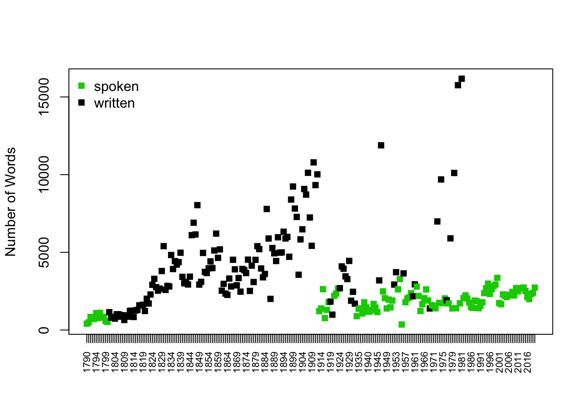

install.packages("sotu", dependencies = TRUE)
install.packages("dplyr", dependencies = TRUE)
install.packages("tidytext", dependencies = TRUE)
install.packages("quanteda", dependencies = TRUE)
install.packages("wordcloud", dependencies = TRUE)
install.packages("SnowballC", dependencies = TRUE)11 Text as Data
Recall that we said, four primary goals of social science include:
- Describe and measure
- Has the U.S. population increased?
- Explain, evaluate, and recommend (study of causation)
- Does expanding Medicaid improve health outcomes?
- Predict
- Who will win the next election?
- Discover
- How do policies diffuse across states?
In this section, we start to explore the goal of discovery, seeing what we can learn from text as data.
11.1 Why text?
Words (can) matter. Patterns of word usage can be suggestive of deeper divides.

Article from Deadspin

Article from NY Times
Why Use R to analyze text?
- Assist in reading large amounts of text


- Efficiently summarize text through quantifying text attributes
- (Can) remove some subjectivity in coding text, allow to discover aspects of text unknown a priori
11.2 R Packages for text
Packages are like apps on your phone. They give you additional functionality. To use the tools in a package you first have to install it.
After you install it, just like on a phone, anytime you want to use the app, you need to open it. In R, we do that with library().
library(sotu)
library(dplyr)
library(tidytext)
library(quanteda)
library(wordcloud)
library(SnowballC)11.3 Application: State of the Union
The sotu package includes a dataset with the text of every U.S. State of the Union speech. It also includes second dataset with information about the speech. When datasets are stored in a package, you can add them to your environment through the data() function.
data(sotu_meta)
data(sotu_text)We are going to “bind” these together into a new dataframe. That way, the sotu_text is a variable inside of our speeches dataframe.
# Combine metadata and text
speeches <- cbind(sotu_meta, text=sotu_text)
speeches$doc_id <- speeches$X # make an id for each row
# SOTU speeches
range(speeches$year)[1] 1790 202011.3.1 Cleaning Text
Note that when working with raw text data, we usually do want our variables to be character variables and not factor variables. Here, every cell is not a category. Instead, it is a speech!
class(speeches$text)[1] "character"Text is messy data. We may want to spruce it up a bit by removing some of the non-essential characters and words, and moving everything to lowercase.
## Example of speech
speeches$text[1][1] "Fellow-Citizens of the Senate and House of Representatives: \n\nI embrace with great satisfaction the opportunity which now presents itself of congratulating you on the present favorable prospects of our public affairs. The recent accession of the important state of North Carolina to the Constitution of the United States (of which official information has been received), the rising credit and respectability of our country, the general and increasing good will toward the government of the Union, and the concord, peace, and plenty with which we are blessed are circumstances auspicious in an eminent degree to our national prosperity.\n\nIn resuming your consultations for the general good you can not but derive encouragement from the reflection that the measures of the last session have been as satisfactory to your constituents as the novelty and difficulty of the work allowed you to hope. Still further to realize their expectations and to secure the blessings which a gracious Providence has placed within our reach will in the course of the present important session call for the cool and deliberate exertion of your patriotism, firmness, and wisdom.\n\nAmong the many interesting objects which will engage your attention that of providing for the common defense will merit particular regard. To be prepared for war is one of the most effectual means of preserving peace.\n\nA free people ought not only to be armed, but disciplined; to which end a uniform and well-digested plan is requisite; and their safety and interest require that they should promote such manufactories as tend to render them independent of others for essential, particularly military, supplies.\n\nThe proper establishment of the troops which may be deemed indispensable will be entitled to mature consideration. In the arrangements which may be made respecting it it will be of importance to conciliate the comfortable support of the officers and soldiers with a due regard to economy.\n\nThere was reason to hope that the pacific measures adopted with regard to certain hostile tribes of Indians would have relieved the inhabitants of our southern and western frontiers from their depredations, but you will perceive from the information contained in the papers which I shall direct to be laid before you (comprehending a communication from the Commonwealth of Virginia) that we ought to be prepared to afford protection to those parts of the Union, and, if necessary, to punish aggressors.\n\nThe interests of the United States require that our intercourse with other nations should be facilitated by such provisions as will enable me to fulfill my duty in that respect in the manner which circumstances may render most conducive to the public good, and to this end that the compensation to be made to the persons who may be employed should, according to the nature of their appointments, be defined by law, and a competent fund designated for defraying the expenses incident to the conduct of foreign affairs.\n\nVarious considerations also render it expedient that the terms on which foreigners may be admitted to the rights of citizens should be speedily ascertained by a uniform rule of naturalization.\n\nUniformity in the currency, weights, and measures of the United States is an object of great importance, and will, I am persuaded, be duly attended to.\n\nThe advancement of agriculture, commerce, and manufactures by all proper means will not, I trust, need recommendation; but I can not forbear intimating to you the expediency of giving effectual encouragement as well to the introduction of new and useful inventions from abroad as to the exertions of skill and genius in producing them at home, and of facilitating the intercourse between the distant parts of our country by a due attention to the post-office and post-roads.\n\nNor am I less persuaded that you will agree with me in opinion that there is nothing which can better deserve your patronage than the promotion of science and literature. Knowledge is in every country the surest basis of public happiness. In one in which the measures of government receive their impressions so immediately from the sense of the community as in ours it is proportionably essential.\n\nTo the security of a free constitution it contributes in various ways - by convincing those who are intrusted with the public administration that every valuable end of government is best answered by the enlightened confidence of the people, and by teaching the people themselves to know and to value their own rights; to discern and provide against invasions of them; to distinguish between oppression and the necessary exercise of lawful authority; between burthens proceeding from a disregard to their convenience and those resulting from the inevitable exigencies of society; to discriminate the spirit of liberty from that of licentiousness - cherishing the first, avoiding the last - and uniting a speedy but temperate vigilance against encroachments, with an inviolable respect to the laws.\n\nWhether this desirable object will be best promoted by affording aids to seminaries of learning already established, by the institution of a national university, or by any other expedients will be well worthy of a place in the deliberations of the legislature.\n\nGentlemen of the House of Representatives: \n\nI saw with peculiar pleasure at the close of the last session the resolution entered into by you expressive of your opinion that an adequate provision for the support of the public credit is a matter of high importance to the national honor and prosperity. In this sentiment I entirely concur; and to a perfect confidence in your best endeavors to devise such a provision as will be truly with the end I add an equal reliance on the cheerful cooperation of the other branch of the legislature.\n\nIt would be superfluous to specify inducements to a measure in which the character and interests of the United States are so obviously so deeply concerned, and which has received so explicit a sanction from your declaration. \n\nGentlemen of the Senate and House of Representatives: \n\nI have directed the proper officers to lay before you, respectively, such papers and estimates as regard the affairs particularly recommended to your consideration, and necessary to convey to you that information of the state of the Union which it is my duty to afford.\n\nThe welfare of our country is the great object to which our cares and efforts ought to be directed, and I shall derive great satisfaction from a cooperation with you in the pleasing though arduous task of insuring to our fellow citizens the blessings which they have a right to expect from a free, efficient, and equal government. GEORGE WASHINGTON\n"# break up the text by word
tokens <- unnest_tokens(tbl = speeches,
output = word,
input = text,
token = "words", # one-token-per-row format
to_lower = TRUE, # lowercase
strip_numeric = TRUE, # strip numbers
strip_punct = TRUE) # strip punctuation
head(tokens) X president year years_active party sotu_type doc_id word
1 1 George Washington 1790 1789-1793 Nonpartisan speech 1 fellow
2 1 George Washington 1790 1789-1793 Nonpartisan speech 1 citizens
3 1 George Washington 1790 1789-1793 Nonpartisan speech 1 of
4 1 George Washington 1790 1789-1793 Nonpartisan speech 1 the
5 1 George Washington 1790 1789-1793 Nonpartisan speech 1 senate
6 1 George Washington 1790 1789-1793 Nonpartisan speech 1 and## further clean the text
tokens <- subset(tokens, !word %in% stop_words$word) # remove stopwords
head(tokens) X president year years_active party sotu_type doc_id
1 1 George Washington 1790 1789-1793 Nonpartisan speech 1
2 1 George Washington 1790 1789-1793 Nonpartisan speech 1
5 1 George Washington 1790 1789-1793 Nonpartisan speech 1
7 1 George Washington 1790 1789-1793 Nonpartisan speech 1
9 1 George Washington 1790 1789-1793 Nonpartisan speech 1
11 1 George Washington 1790 1789-1793 Nonpartisan speech 1
word
1 fellow
2 citizens
5 senate
7 house
9 representatives
11 embrace## could also stem the words
#tokens$word <- wordStem(tokens$word, language = "en")Note: What you might consider non-essential could differ depending on your application. Maybe you want to keep numbers in your text, for example.
11.3.2 Word Frequency
We count the number of times each word appears in each speech and sort them in descending order.
## introducing some tidyverse tools %>%
token_counts <- tokens %>%
count(doc_id, word, sort = TRUE)
head(token_counts) doc_id word n
1 158 dollars 207
2 199 congress 204
3 158 war 201
4 122 government 164
5 58 mexico 158
6 190 federal 141Here are the most frequent words for the first and last speeches.
# Word frequencies for first and last speech
head(subset(token_counts, doc_id == 1), 10) doc_id word n
22830 1 public 5
31278 1 country 4
31279 1 government 4
31280 1 measures 4
31281 1 regard 4
31282 1 united 4
45218 1 affairs 3
45219 1 citizens 3
45220 1 free 3
45221 1 house 3head(subset(token_counts, doc_id == 240), 10) doc_id word n
566 240 american 36
1751 240 people 22
1950 240 america 21
1951 240 country 21
2168 240 americans 20
2444 240 administration 19
2719 240 tonight 18
3057 240 america's 17
3467 240 president 16
3987 240 world 15Note: these are somewhat generic words.
11.3.3 Wordcloud
We can create a wordcloud of these speeches. Note that you can add color to the wordcloud using the same col argument. You can also assign a vector of colors and indicate ordered.colors=T to make sure they show up according to the order of the colors you assign.
Sometimes you will get a warning message that not all words could fit. You can increase the size of your plotting window in RStudio or adjust the scale() argument, which is similar to our cex arguments in past plotting functions. Scale reflects the range of the size of the words.
first_speech <- subset(token_counts, doc_id == 1)
first_speech$colors <- ifelse(first_speech$word=="citizens", "red2", "black")
wordcloud(first_speech$word, first_speech$n, max.words = 20,
col=first_speech$colors,
ordered.colors = T,
scale=c(3.5, 0.25))
11.4 Word Importance
We use tf-idf (term frequency - inverse document frequency) as a way to pull out uniquely important/relevant words for a given character.
- Relative frequency of a term inversely weighted by the number of documents in which the term appears.
- Functionally, if everyone uses the word “know,” then it’s not very important for distinguishing characters/documents from each other.
- We want words that a speech used frequently, that other speeches use less frequently
tfidf <- token_counts %>%
bind_tf_idf(word, doc_id, n) %>%
arrange(desc(tf_idf))
# Most unique words in first and last speech
head(subset(tfidf, doc_id == 1), 10) doc_id word n tf idf tf_idf
91 1 intimating 1 0.002450980 5.480639 0.013432939
92 1 licentiousness 1 0.002450980 5.480639 0.013432939
164 1 discern 1 0.002450980 4.787492 0.011734048
229 1 inviolable 1 0.002450980 4.382027 0.010740261
260 1 derive 2 0.004901961 2.113343 0.010359525
261 1 persuaded 2 0.004901961 2.113343 0.010359525
339 1 cherishing 1 0.002450980 3.871201 0.009488238
340 1 comprehending 1 0.002450980 3.871201 0.009488238
341 1 novelty 1 0.002450980 3.871201 0.009488238
424 1 cool 1 0.002450980 3.534729 0.008663551head(subset(tfidf, doc_id == 240), 10) doc_id word n tf idf tf_idf
75 240 ellie 7 0.002564103 5.480639 0.014052920
87 240 sanctuary 10 0.003663004 3.688879 0.013512379
245 240 tony 6 0.002197802 4.787492 0.010521960
294 240 amy 5 0.001831502 5.480639 0.010037800
295 240 iain 5 0.001831502 5.480639 0.010037800
296 240 janiyah 5 0.001831502 5.480639 0.010037800
297 240 jody 5 0.001831502 5.480639 0.010037800
303 240 tonight 18 0.006593407 1.510347 0.009958332
586 240 hake 4 0.001465201 5.480639 0.008030240
587 240 ortiz 4 0.001465201 5.480639 0.008030240## wordcloud
first_speech_tfidf <- subset(tfidf, doc_id == 1)
wordcloud(first_speech_tfidf$word, first_speech_tfidf$tf_idf, max.words = 30,
scale=c(2.5, 0.25))
Instead of a wordcloud, we could also present results as barplots.
barplot(first_speech_tfidf$tf_idf[1:10],
cex.axis=.6,
names=first_speech_tfidf$word[1:10],
cex.names=.5,
main= "Most `Important' 1790 SOTU Words (tf-idf)",
horiz = T, # flips the plot
las=2,
xlim=c(0, .015))
11.5 Document length
Are the length of speeches changing? The nchar() function tells you the number of characters in a “string.”
speeches$speechlength <- nchar(speeches$text)Let’s plot the length of speeches over time and annotate with informative colors and labels.
Is the length of speeches changing?
plot(x=1:length(speeches$speechlength), y= speeches$speechlength,
pch=15,
xaxt="n",
xlab="",
ylab = "Number of Characters")
## add x axis
axis(1, 1:length(speeches$speechlength), labels=speeches$year, las=3, cex.axis=.7)
We can add color to distinguish written vs. spoken speeches
speechcolor <- ifelse(speeches$sotu_type == "written", "black", "green3")
plot(x=1:length(speeches$speechlength), y= speeches$speechlength,
xaxt="n", pch=15,
xlab="",
ylab = "Number of Characters",
col = speechcolor)
## add x axis
axis(1, 1:length(speeches$speechlength), labels=speeches$year, las=3, cex.axis=.7)
## add legend
legend("topleft", c("spoken", "written"),
pch=15,
col=c("green3", "black"), bty="n")
11.5.1 Counting tokens instead of characters
token_totals <- tapply(token_counts$n, token_counts$doc_id, sum)
# Convert to a data frame
token_totals <- data.frame(
doc_id = as.integer(names(token_totals)),
token_count = as.integer(token_totals)
)
speeches <- merge(speeches, token_totals, by = "doc_id", all.x = TRUE)speechcolor <- ifelse(speeches$sotu_type == "written", "black", "green3")
plot(x=1:length(speeches$token_count), y= speeches$token_count,
xaxt="n", pch=15,
xlab="",
ylab = "Number of Words",
col = speechcolor)
## add x axis
axis(1, 1:length(speeches$token_count), labels=speeches$year, las=3, cex.axis=.7)
## add legend
legend("topleft", c("spoken", "written"),
pch=15,
col=c("green3", "black"), bty="n")
11.5.2 Hypothesis Tests
Can we test whether written speeches are significantly different in length from spoken speeches?
Null hypothesis: No difference in speech length
Can we reject the null?
t.speechlength <- t.test(speechlength ~ sotu_type, data=speeches)
t.speechlength
Welch Two Sample t-test
data: speechlength by sotu_type
t = -10.512, df = 158.83, p-value < 2.2e-16
alternative hypothesis: true difference in means between group speech and group written is not equal to 0
95 percent confidence interval:
-45385.33 -31028.20
sample estimates:
mean in group speech mean in group written
27815.75 66022.51 round(t.speechlength$p.value, digits=4)[1] 0What about a different hypothesis: Have speeches become shorter over time? For every one year increase, do we see an average decline in speech length?
Null hypothesis: No relationship, b=0
Can we reject the null? No!
fit <- lm(speechlength ~ year, data=speeches)
summary(fit)
Call:
lm(formula = speechlength ~ year, data = speeches)
Residuals:
Min 1Q Median 3Q Max
-43608 -24388 -11012 13329 170023
Coefficients:
Estimate Std. Error t value Pr(>|t|)
(Intercept) 46024.017 68176.805 0.675 0.500
year 1.972 35.734 0.055 0.956
Residual standard error: 37060 on 238 degrees of freedom
Multiple R-squared: 1.28e-05, Adjusted R-squared: -0.004189
F-statistic: 0.003046 on 1 and 238 DF, p-value: 0.956Note that you can add multiple predictors to “control” on one variable while studying the relationship with others.
fit2 <- lm(speechlength ~ year + sotu_type, data=speeches)
summary(fit2)
Call:
lm(formula = speechlength ~ year + sotu_type, data = speeches)
Residuals:
Min 1Q Median 3Q Max
-65280 -14135 -3968 11846 128118
Coefficients:
Estimate Std. Error t value Pr(>|t|)
(Intercept) -442623.81 66411.66 -6.665 1.84e-10 ***
year 241.11 34.01 7.090 1.53e-11 ***
sotu_typewritten 56814.80 4604.68 12.338 < 2e-16 ***
---
Signif. codes: 0 '***' 0.001 '**' 0.01 '*' 0.05 '.' 0.1 ' ' 1
Residual standard error: 28980 on 237 degrees of freedom
Multiple R-squared: 0.3911, Adjusted R-squared: 0.386
F-statistic: 76.12 on 2 and 237 DF, p-value: < 2.2e-16Now that we control on speech type, we see that time is associated with a slight increase in length.
11.6 Dictionary Analysis
We can characterize the content of speeches in different ways. For example, we can see if speeches mention specific words, such as “terrorism.”
# Define a set of related terms
terror_terms <- c("terror", "terrorism", "terrorist",
"counterterror")
# Subset to just those tokens
terror_tokens <- subset(token_counts, word %in% terror_terms)
# Count terrorism-related tokens per doc_id using tapply
terror_counts <- tapply(terror_tokens$n, terror_tokens$doc_id, sum)
head(terror_counts)29 62 79 86 95 96
1 1 1 1 1 1 We now create a data.frame. We did this recently in our prediction module. This just reformts our tapply output.
# Convert named vector to data frame
terror_counts <- data.frame(
doc_id = names(terror_counts),
terror_word_count = as.integer(terror_counts)
)
head(terror_counts) doc_id terror_word_count
1 29 1
2 62 1
3 79 1
4 86 1
5 95 1
6 96 1We can now merge this back in with our speeches data so that the information is attached to our original dataset.
# Merge with speeches
speeches <- merge(speeches, terror_counts, by = "doc_id", all.x = TRUE)Lastly, we have just a little cleanup. We want all of the speeches to have a number, so we have to replace any missing values with 0, indicating the absence of any “terrorism” word.
# Replace NA with 0 (docs that had none of those terms)
speeches$terror_word_count[is.na(speeches$terror_word_count)] <- 0Let’s look at the use of terrorism words by president.
sort(tapply(speeches$terror_word_count, speeches$president, sum),
decreasing=T)[1:10] George W. Bush William J. Clinton Donald Trump
94 16 14
Barack Obama Ronald Reagan Franklin D. Roosevelt
13 9 5
Lyndon B. Johnson Harry S Truman Jimmy Carter
4 3 3
Chester A. Arthur
2 What are possible limitations of this analysis?